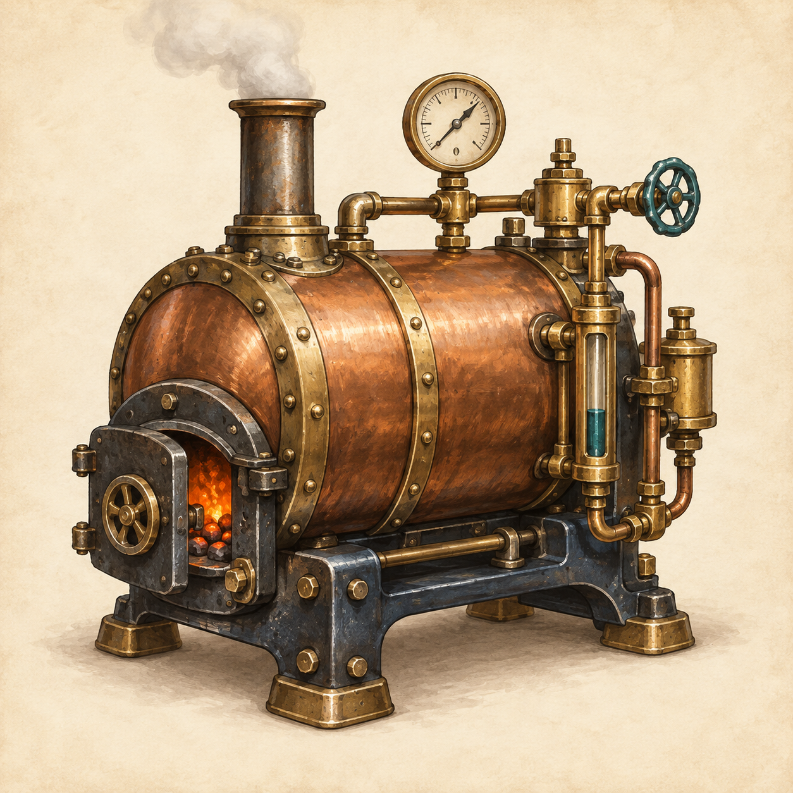
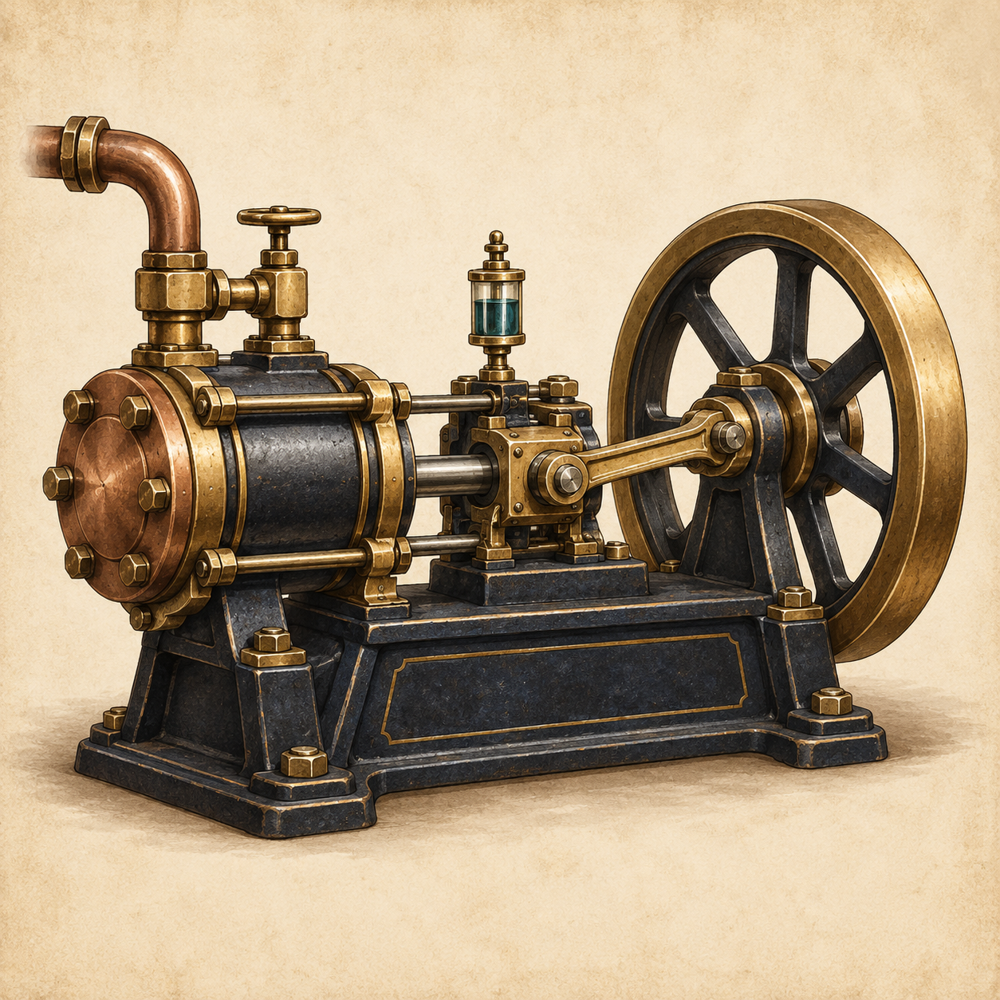
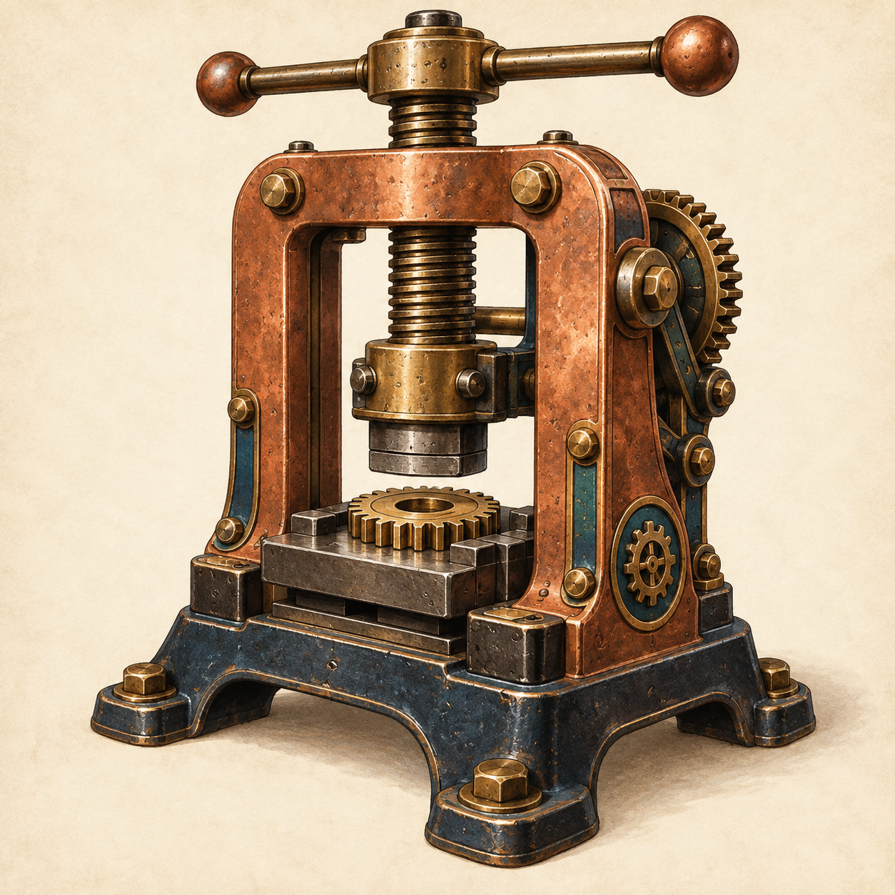
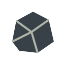
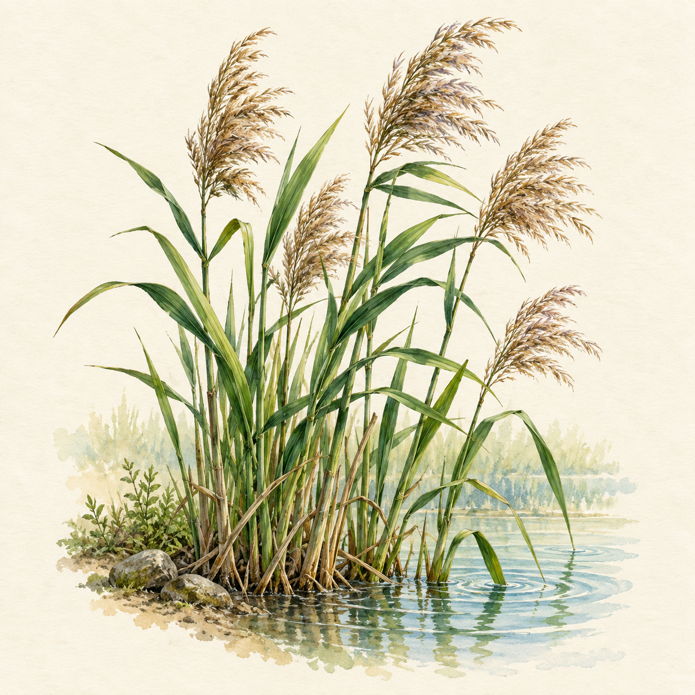
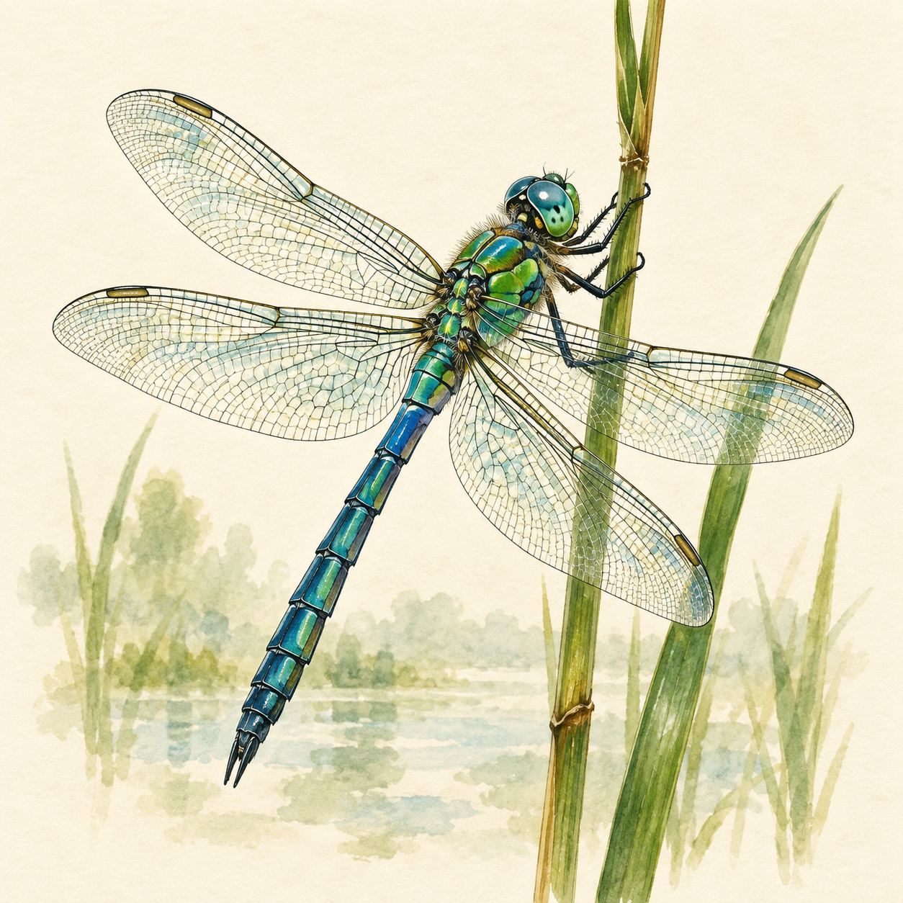
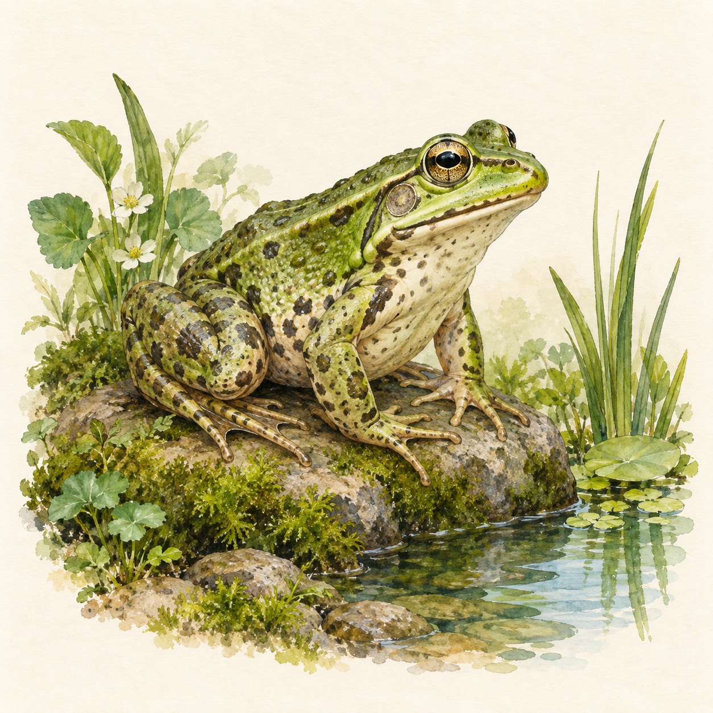
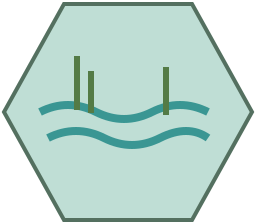
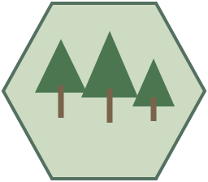
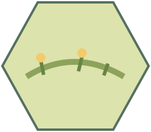

producerFree draft / install

Boiler
Spend 1 coal to gain 2 steam.
boiler · Source art
Browse the starter art and editable card definitions. This catalogue is not a playable game. Exact effects are proposed for testing; the written plans define the complete loop.
Build a spatial machine engine; compete for fuel and public commissions.

Spend 1 coal to gain 2 steam.

Spend 1 steam to gain 1 work.

Spend 1 work to gain 1 gear.
Once per round, boost an orthogonally adjacent Boiler activation by 1 steam. At most one Condenser boosts an activation.

Once per player per round, take 1 extra available coal with a Power action.
Spend 1 steam to gain 1 work; gain 1 extra work if orthogonally adjacent to a Piston.
Spend 2 steam to gain 1 gear.
Spend 1 gear to gain 2 coal.
Spend 2 work to gain 2 gears; gain 1 extra gear if orthogonally adjacent to a Piston.
Spend 1 coal to gain 1 work.
Develop organisms; reshape the shared map and contest habitats.

During income gain 1 growth; gain 2 instead in Wetland. No influence.

In Wetland: 1 influence, plus 2 with friendly Reeds on the same tile. Else 0.

2 influence in Wetland; 0 elsewhere.
Once per player per round, optionally reduce an organism planting cost by 1 growth, to a minimum of 0. Does not stack.

Spend 2 growth: change a reachable Meadow into Wetland. Discard this card.
Spend 1 growth: move one owned organism to an adjacent habitat. Discard this card.
During income gain 2 growth in Meadow; 0 elsewhere. No influence.
In Meadow: 1 influence, plus 2 with friendly Clover on the same tile. Else 0.

3 influence in Woodland; 1 in any other terrain.

Spend 2 growth: change a reachable Wetland into Meadow. Discard this card.